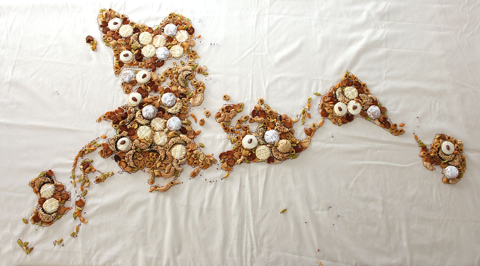
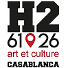
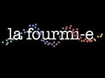
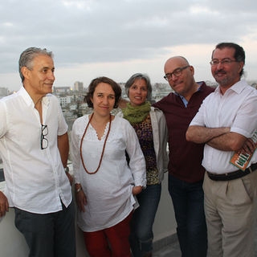
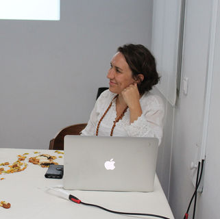
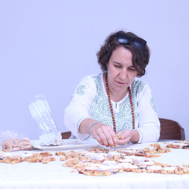

Performance dégustative - Casablanca, Espace H2
Conférence et exposition accueillies par Mohamed Rachdi à l'espace H2 à Casablanca.
Événement soutenu par l'Institut Français, l'association La Fourmi-e, Mohamed Rachdi, Amina et Chafik Aaziz.
Tasting performance - Casablanca, Espace H2
Conference and exhibition hosted by Mohamed Rachdi at Espace H2 in Casablanca.
Event supported by the French Institute, La Fourmi-e association, Mohamed Rachdi, Amina and Chafik Aaziz.




